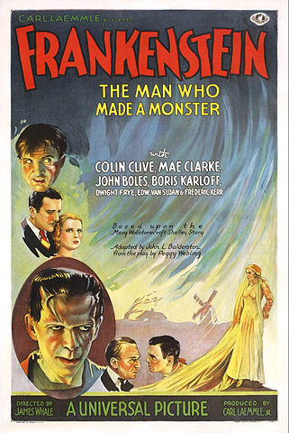

ハリウッドはアメリカ合衆国カリフォルニア州のロサンゼルス市にある地区です。

ハリウッドと聞くと映画を思い浮かべる人も多いのではないでしょうか。
しかし、始めからハリウッドが映画産業の街だったわけではないのです。
元々映画は、ニュージャージー州やシカゴが定番でした。
では、なぜハリウッドは映画産業の街になったのでしょうか。
そのカギには、発明王トーマス・エディソンの存在があります。
彼は、キネトスコープなどを発明・販売し、映画の利益を独占しようと考え、
1908年2月に会社を設立しました。
モーション・ピクチャー・パテント・カンパニー
(Motion Picture Patents Company 略称MPPC）
またの名を、ディソン・トラスト
エディソンはもくろみ通り、アメリカ国内での映画製作・配給を独占しました。
独占したという事は元々仕事をしていた中間配給会社や独立系映画会社は抑圧を受けてしまいます。
抑圧を受け逃げた先がハリウッドなのです。
つまり
ハリウッドはエディソンの圧力から逃れてきた映画業者のあつまり！！
なのです
たまたま逃げた先がハリウッドなのではなく
ハリウッドを逃げ場所に選んだ理由は、ちゃんとあります。

ハリウッドは、地中海性気候となっていて、温暖で夏は太陽がまぶしく雨が降らない！
これは、映画作りに最適な場所なのです。
また
メキシコに近いため、エディソン・トラストの追手からも逃げやすいのです。
1911年にネストール社が最初に映画撮影スタジオを建設し、それから続々とスタジオを建設していきます。
翌年の1912年日本でも有名かつハリウッドを代表する会社が入ります。それが
ユニバーサル・ピクチャーズ
創業者はカール・レムリ
様々な映画作品を生み出し、着々と地に足を付けていったのですが
1928年にレムリは息子であるレムリ・ジュニアに社長の地位を譲ります。
カール・レムリの息子
カール・レムリ・ジュニア

更に追い打ちをかけるように、世界恐慌が起こります。
世界恐慌Wikipedia
世界恐慌とは、1929年10月24日に起こった株価大暴落であり、世界が大不況に陥ります。
世の中は大不況の中、ジュニアは2本の作品を作ろうとします。その作品というのが
「魔人ドラキュラ」と「フランケンシュタイン」です。

魔人ドラキュラWikipedia フランケンシュタインWikipedia
この2本はホラー作品です。
今では一般的なジャンルですが当時ホラーは
ポルノ同様に人間の神経を刺激するだけの低級なもので由緒ある映画会社が手を出すべきではない
と考えられていました。
重役はもちろん大反対です。
ですが、ジュニアは重役の反対を押し切って、この2つの製作し、大ヒットさせます。
以降、ユニバーサル・ホラーが代名詞となり、ヒット作が続きます。
出展:2019ハロウィンホラーナイトイベントまとめ
毎年秋に行われているUSJのハロウィーン・ホラーナイトは
ユニバーサル・ホラーの伝統とされているものといえるでしょう。